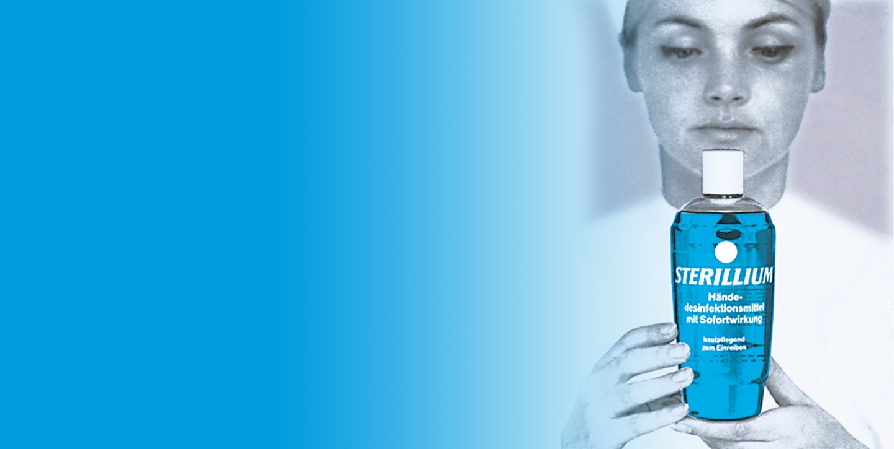

ABOUT US
Quat-Chem Ltd. is a subsidiary of Neogen Corporation. Neogen Corporation develops and markets products dedicated to food and animal safety. The company’s Food Safety Division markets dehydrated culture media, and diagnostic test kits to detect foodborne bacteria, natural toxins, food allergens, drug residues, plant diseases and sanitation concerns. Neogen’s Animal Safety Division is a leader in the development of animal genomics along with the manufacturing and distribution of a variety of animal healthcare products, including diagnostics, pharmaceuticals, veterinary instruments, wound care and disinfectants.